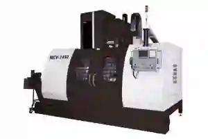
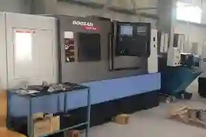
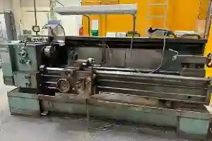
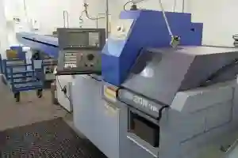
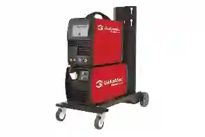
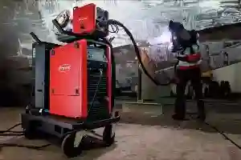

Makine Parkımız
Aymaksan Makina’nın makine parkımız, modern üretim teknolojileri ile donatılmış, hassasiyet, süreklilik ve kalite odaklı bir üretim altyapısını temsil eder. Sahip olduğumuz CNC makine parkı, farklı sektörlerin ihtiyaçlarına cevap verebilecek esneklikte yapılandırılmıştır. Tornalama, frezeleme, otomatik seri üretim ve kaynak uygulamalarını kapsayan bu yapı; karmaşık geometrilerden yüksek toleranslı parçalara kadar geniş bir üretim yelpazesi sunar.
Firmamızın endüstriyel makine parkı, yalnızca makine çeşitliliği ile değil; bu makinelerin birbiriyle entegre çalışabildiği üretim planlama disipliniyle de öne çıkar. Bu yaklaşım, hassas üretim makineleri sayesinde kalite sürekliliği ve ölçülebilir performans avantajı sağlar. Özellikle özel talaşlı imalat makine parkı yapımız, proje bazlı ve seri üretim taleplerini aynı çatı altında yönetebilmemize olanak tanır.
Aymaksan Makina Makine Parkımız

DAHLIH MCV-1450 Dik İşleme Merkezi

Doosan / DN Solutions PUMA 280L Yatay CNC Torna

TOS SUI 50 Universal Torna

SB-20R TİP G Otomatik Torna

TIG Kaynak Makinesi PoWerPlus TIG 320 AC/DC Pulse

VARIO STAR 304-G MIG MAG Kaynak Makinesi
Aymaksan Makina Makine Parkının Üretimdeki Stratejik Rolü
Bir üretim tesisinin rekabet gücü, sahip olduğu makine altyapısının teknolojik seviyesi ile doğrudan ilişkilidir. Aymaksan Makina’da konumlandırılmış makina parkımız, üretim hızını artırırken tolerans sapmalarını minimize edecek şekilde yapılandırılmıştır. Bu sayede müşteri taleplerine hızlı, tutarlı ve tekrarlanabilir çözümler sunulmaktadır.
CNC torna ve freze sistemleri, otomatik torna teknolojileri ve gelişmiş kaynak makineleri; üretim süreçlerinde insan hatasını azaltan, ölçülebilir kalite sağlayan bir yapı oluşturur. Bu yapı, Aymaksan Makina parkı içinde yer alan her ekipmanın belirli bir üretim amacına hizmet etmesini sağlar. Böylece her makine, üretim hattında stratejik bir rol üstlenir.
CNC ve Kaynak Teknolojileriyle Entegre Üretim Altyapısı
CNC Makine Parkı ile Hassas Talaşlı İmalat
Aymaksan Makina bünyesindeki CNC makine parkı, yüksek devirli işleme, hassas yüzey kalitesi ve tekrarlanabilir ölçü doğruluğu sunar. Bu yapı; otomotiv, savunma sanayi, medikal ve makine imalat sektörleri için kritik öneme sahip parça üretimlerini destekler. Hassas üretim makineleri, karmaşık parçaların tek bağlamada işlenmesine olanak tanıyarak hem zaman hem de maliyet avantajı sağlar.
Kaynak Makineleri ile Güçlü Birleştirme Teknolojileri
Üretim altyapımızda yer alan kaynak makineleri üretim altyapısı, MIG/MAG ve TIG kaynak teknolojileriyle desteklenmektedir. Bu sistemler; dayanıklılık gerektiren metal konstrüksiyon parçalarının üretiminde yüksek mukavemetli birleştirmeler sağlar. Böylece endüstriyel makina parkı, yalnızca talaşlı imalat değil, komple üretim çözümü sunan bir yapıya dönüşür.
Projeni Başlat
Makine Parkımızda Yer Alan Tezgâhların Üretim Kabiliyetleri
Aymaksan Makina’nın makine parkımız, birbirini tamamlayan CNC, otomatik torna, universal torna ve kaynak sistemlerinden oluşan entegre bir üretim altyapısıdır. Bu yapı, hem prototip hem de seri üretim ihtiyaçlarını karşılayacak şekilde kurgulanmıştır. Sahip olunan CNC makine parkı, farklı tolerans aralıklarında ve değişken geometrilerde parça üretimini mümkün kılar.
Üretim hattında yer alan her makine, belirli bir operasyon için optimize edilmiştir. Bu yaklaşım sayesinde endüstriyel makine parkı, parça bazlı değil süreç bazlı bir verimlilik sunar. Özellikle özel talaşlı imalat makine parkı anlayışı, müşteri taleplerine göre esnek üretim planlaması yapılmasına olanak tanır.
Dik İşleme ve CNC Tornalama Sistemlerinin Üretimdeki Yeri
DAHLIH MCV-1450 Dik İşleme Merkezi ile Çok Yüzeyli İşleme
DAHLIH MCV-1450 Dik İşleme Merkezi, makina parkımız içerisinde yüksek hassasiyet gerektiren frezeleme operasyonlarının merkezinde yer alır. Bu tezgâh; prizmatik parçalar, karmaşık cepler, kanallar ve hassas yüzey toleransları gerektiren bileşenlerin üretiminde kullanılır. Hassas üretim makinaları arasında konumlanan bu sistem, çok eksenli işleme kabiliyetiyle ölçüsel doğruluğu üst seviyeye taşır.
Bu makine sayesinde CNC makina parkı, savunma sanayi, otomotiv ve makine imalatı gibi sektörlerde ihtiyaç duyulan yüksek hassasiyetli parçaları güvenle üretebilir. Tek bağlamada çoklu operasyon yapılabilmesi, üretim sürelerini kısaltırken kalite sürekliliği sağlar.
Doosan / DN Solutions PUMA 280L CNC Torna ile Ağır ve Orta Ölçekli Parça Üretimi
Doosan / DN Solutions PUMA 280L CNC Torna, makina parkımız içinde yüksek rijitlik ve stabilite gerektiren tornalama operasyonları için konumlandırılmıştır. Bu tezgâh, orta ve büyük çaplı silindirik parçaların üretiminde yüksek performans sunar. CNC torna ve freze sistemleri arasında kritik bir rol üstlenen PUMA 280L, seri üretim ve tekrarlanabilir kalite açısından önemli avantajlar sağlar.
Bu yapı sayesinde Aymaksan Makina parkı, hidrolik bileşenler, mil sistemleri ve taşıyıcı parçalar gibi yüksek mukavemet gerektiren ürünlerin üretimini güvenle gerçekleştirebilir. Tezgâhın sunduğu hassasiyet, ölçü toleranslarının uzun üretim serilerinde dahi korunmasını sağlar.
Otomatik ve Universal Tornalar ile Esnek Üretim Yeteneği
SB-20R Tip G Otomatik Torna ile Seri ve Mikro Hassasiyet
SB-20R Tip G Otomatik Torna, makine parkımız içerisinde seri üretim ve küçük çaplı parçalar için optimize edilmiş bir sistemdir. Kayar otomat teknolojisi sayesinde yüksek adetli üretimlerde dahi mikron seviyesinde hassasiyet sunar. Bu tezgâh, özel talaşlı imalat makine parkı yapısının seri üretim ayağını güçlendirir.
Medikal, elektronik ve otomotiv alt bileşenlerinde tercih edilen bu sistem, hassas üretim makineleri arasında hız ve doğruluk dengesini en iyi sağlayan çözümlerden biridir. Bu sayede endüstriyel makina parkı, düşük toleranslı ve yüksek adetli talepleri aynı anda karşılayabilir.
TOS SUI 50 Universal Torna ile Prototip ve Özel İşler
TOS SUI 50 Universal Torna, makina parkımız içinde esneklik gerektiren üretimlerin merkezinde yer alır. Tek parça veya düşük adetli özel üretimlerde hızlı müdahale ve operatör kontrollü işleme avantajı sağlar. Bu özellik, CNC makine parkı ile tamamlayıcı bir üretim dengesi oluşturur.
Universal torna, bakım-onarım parçaları, revizyon işleri ve özel ölçülü komponentlerde yüksek adaptasyon kabiliyeti sunar. Bu da Aymaksan Makine Parkı için kritik bir operasyonel esneklik anlamına gelir.
Teklif İsteyin
Makine Parkımızda Kaynak Teknolojilerinin Üretime Katkısı
Aymaksan Makina’nın makine parkımız, yalnızca talaşlı imalat odaklı değil; aynı zamanda güçlü bir birleştirme altyapısına sahip olacak şekilde yapılandırılmıştır. Bu kapsamda yer alan kaynak makineleri üretim altyapısı, metal parçaların yüksek mukavemetle birleştirilmesini sağlayarak komple üretim çözümleri sunar. Bu yapı, özellikle kaynak sonrası işleme gerektiren projelerde üretim sürekliliğini garanti altına alır.
Endüstriyel makine parkı içerisinde konumlanan TIG ve MIG/MAG kaynak sistemleri, farklı malzeme türleri ve kalınlıkları için optimize edilmiş çözümler sunar. Böylece Aymaksan Makina Parkı, yarı mamulden nihai ürüne kadar tüm üretim sürecini tek çatı altında yönetebilir.
TIG ve MIG/MAG Kaynak Sistemlerinin Uygulama Alanları
PoWerPlus TIG 320 AC/DC Pulse ile Hassas Kaynak Uygulamaları
PoWerPlus TIG 320 AC/DC Pulse, makina parkımız içerisinde yüksek hassasiyet gerektiren kaynak işlemlerinin merkezinde yer alır. Özellikle alüminyum, paslanmaz çelik ve ince cidarlı metal parçaların birleştirilmesinde tercih edilen bu sistem, kontrollü ısı dağılımı sayesinde deformasyon riskini minimize eder. Bu özellik, hassas üretim makineleri ile üretilmiş parçaların ölçüsel doğruluğunu korur.
TIG kaynak teknolojisi, CNC makine parkı ile üretilen hassas parçaların montaj ve birleştirme süreçlerinde yüksek estetik ve mukavemet sağlar. Bu sayede özel talaşlı imalat makine parkı, ileri seviye mühendislik gerektiren projelerde güvenilir bir çözüm ortağı haline gelir.
VARIO STAR 304-G MIG MAG Kaynak Makinesi ile Endüstriyel Dayanım
VARIO STAR 304-G MIG MAG Kaynak Makinesi, makine parkımız içinde yüksek dayanım gerektiren yapısal parçaların üretiminde kritik bir rol üstlenir. Bu sistem, kalın kesitli metal bileşenlerin hızlı ve güçlü şekilde birleştirilmesine olanak tanır. Seri üretime uygun yapısı sayesinde endüstriyel makine parkı, zaman ve maliyet avantajı elde eder.
MIG/MAG kaynak sistemleri, CNC torna ve freze sistemleri ile üretilen parçaların konstrüksiyon aşamasında yüksek mukavemetli bağlantılar oluşturur. Böylece Aymaksan Makina makine parkı, ağır sanayi ve makine imalatı projelerinde tam kapsamlı üretim kabiliyeti sunar.
Talaşlı İmalat ve Kaynak Süreçlerinin Entegre Kullanımı
Modern üretim anlayışında, talaşlı imalat ve kaynak süreçlerinin birbirinden bağımsız düşünülmesi verim kaybına neden olur. Aymaksan Makina’da kurgulanan makina parkımız, bu iki süreci entegre edecek şekilde planlanmıştır. Bu yaklaşım, üretim hatları arasında malzeme transferini minimize ederken kalite kontrol süreçlerini hızlandırır.
CNC makina parkı ile üretilen yarı mamuller, kaynak operasyonlarının ardından tekrar işleme alınarak nihai ölçülerine ulaştırılır. Bu yöntem, hassas üretim makinaları sayesinde tolerans kayıplarının önüne geçer. Böylece özel talaşlı imalat makina parkı, yüksek katma değerli ürünlerin üretiminde önemli bir avantaj sağlar.
İletişime Geçin
Makine Parkımızın Sektörel Üretim Yetkinliği
Aymaksan Makina’nın makine parkımız, farklı sektörlerin teknik gereksinimlerini karşılayabilecek çok yönlü bir üretim altyapısı sunar. Sahip olunan endüstriyel makina parkı, düşük toleranslı, yüksek mukavemetli ve tekrarlanabilir parça üretimi gerektiren sektörler için stratejik bir avantaj sağlar. Bu yapı sayesinde firma, yalnızca üretici değil; aynı zamanda mühendislik çözüm ortağı rolü üstlenir.
CNC – Computer Numerical Control makine parkı ve kaynak teknolojilerinin entegre kullanımı, sektörel projelerde kalite sürekliliğini garanti altına alır. Bu yaklaşım, Aymaksan Makina makine parkı içinde yer alan tüm makinelerin ortak bir üretim hedefi doğrultusunda çalışmasını sağlar.
Savunma Sanayi İçin Yüksek Hassasiyetli Üretim Altyapısı
Savunma sanayi projeleri, sıfıra yakın toleranslar, sert kalite kontrol prosedürleri ve izlenebilir üretim süreçleri gerektirir. Aymaksan Makina’nın makine parkımız, bu gereksinimleri karşılayabilecek hassas üretim makineleri ile donatılmıştır. CNC tornalar, dik işleme merkezleri ve otomatik tornalar; kritik parçaların ölçüsel doğrulukla üretilmesini mümkün kılar.
Bu yapı, özel talaşlı imalat makine parkı anlayışının savunma sanayine uyarlanmış halidir. Üretim süreçleri boyunca kalite kontrol ve proses takibi, endüstriyel makine parkı disiplininin ayrılmaz bir parçasıdır. Böylece savunma projelerinde güvenilir ve sürdürülebilir üretim sağlanır.
Otomotiv ve Elektrikli Araç Bileşenlerinde Üretim Gücü
Otomotiv ve elektrikli araç sektörleri, seri üretim kabiliyeti ile birlikte yüksek yüzey kalitesi ve ölçü tekrarlanabilirliği talep eder. Bu noktada makine parkımız, CNC torna ve freze sistemleri ile desteklenen güçlü bir üretim hattı sunar. Özellikle otomatik torna sistemleri, yüksek adetli üretimlerde kalite standartlarının korunmasını sağlar.
Aymaksan Makine Parkı, otomotiv alt bileşenleri, bağlantı elemanları ve özel mekanik parçaların üretiminde hız ve kalite dengesini başarıyla kurar. Bu yaklaşım, CNC – Computer Numerical Control makine parkı altyapısının sektörel taleplerle uyumlu şekilde yapılandırıldığını gösterir.
Medikal, Enerji ve Endüstriyel Makine İmalatına Özel Çözümler
Medikal ve enerji sektörleri, malzeme hassasiyeti ve yüzey kalitesi açısından yüksek standartlara sahiptir. Aymaksan Makina parkımız, paslanmaz çelik ve özel alaşımların işlenmesine uygun hassas üretim makineleri ile bu sektörlerin gereksinimlerini karşılar. TIG kaynak sistemleri, medikal ve enerji bileşenlerinde güvenilir birleştirme çözümleri sunar.
Endüstriyel makine imalatında ise endüstriyel makine parkı, ağır hizmet parçalarının üretiminde yüksek dayanım ve uzun ömürlü kullanım avantajı sağlar. Bu yapı, özel talaşlı imalat makine parkı yaklaşımının sektörel çeşitliliğini net biçimde ortaya koyar.
Aymaksan Makina, farklı sektörlerin teknik gereksinimlerini analiz ederek üretim altyapısını bu doğrultuda yapılandırır. Medikal alanda yüzey kalitesi ve tolerans hassasiyeti ön plandayken, enerji sektöründe dayanım ve uzun ömürlü kullanım esas alınır. Endüstriyel makine imalatında ise yüksek mukavemetli ve karmaşık geometrilere sahip parçalar öne çıkar. Bu çeşitlilik, makine parkımız içerisinde yer alan CNC işleme, tornalama ve kaynak sistemlerinin entegre çalışmasıyla karşılanır. Böylece farklı sektörlere özel üretimler, aynı kalite standardı altında ve sürdürülebilir bir üretim disipliniyle gerçekleştirilir.
İletişime Geçin
Makine Parkımızda Kalite, Süreklilik ve Ölçülebilir Üretim
Aymaksan Makina’nın makina parkımız, yalnızca ileri teknoloji makinelerden oluşan bir altyapı değil; aynı zamanda ölçülebilir kaliteyi merkeze alan bir üretim sistemidir. Sahip olunan CNC makina parkı, üretim sürecinin her aşamasında tolerans kontrolü, yüzey kalitesi ve ölçü tekrarlanabilirliği sağlayacak şekilde yapılandırılmıştır. Bu yaklaşım, uzun vadeli müşteri memnuniyetinin temelini oluşturur.
Üretimde kullanılan hassas üretim makineleri, kalite kontrol süreçleriyle entegre çalışır. Bu sayede endüstriyel makina parkı, sadece parça üretimi değil; sürdürülebilir kalite standardı sunan bir yapı haline gelir. Özellikle özel talaşlı imalat makina parkı, yüksek katma değerli projelerde güvenilir üretim altyapısı sağlar.
Sürdürülebilir ve Geleceğe Uyumlu Üretim Altyapısı
Modern sanayi anlayışı, verimlilik kadar sürdürülebilirliği de zorunlu kılmaktadır. Aymaksan Makina’nın makine parkımız, enerji verimliliği yüksek sistemler ve optimize edilmiş üretim planlaması ile çevresel etkiyi minimize edecek şekilde konumlandırılmıştır. Bu yapı, hem maliyet avantajı hem de çevre dostu üretim yaklaşımı sunar.
CNC – Computer Numerical Control torna ve freze sistemleri, minimum fire ve maksimum malzeme verimliliği sağlayacak şekilde programlanır. Kaynak teknolojilerinde ise kontrollü ısı yönetimi sayesinde deformasyon ve yeniden işleme ihtiyacı azaltılır. Böylece Aymaksan Makina makine parkı, bugünün üretim ihtiyaçlarını karşılarken geleceğin sanayi standartlarına da uyum sağlar.
Makine Parkımız ile Entegre ve Güvenilir Üretim Çözümleri
Aymaksan Makina parkı, tasarımdan seri üretime kadar tüm süreçleri kapsayan entegre bir yapı sunar. CNC işleme, otomatik tornalama, universal tornalama ve kaynak teknolojileri; tek bir üretim disiplini altında bir araya getirilmiştir. Bu yaklaşım, üretim sürelerini kısaltırken kalite sürekliliğini garanti altına alır. CNC makine parkı ve kaynak makineleri üretim altyapısı, farklı sektörlerden gelen taleplerin aynı kalite standardında karşılanmasını mümkün kılar. Bu bütüncül yapı, endüstriyel makine parkı anlayışının Aymaksan Makina’daki karşılığını net biçimde ortaya koyar.
Üretim süreçlerinde tellant entegrasyon, kalite ve zaman yönetiminin temel unsurudur. Aymaksan Makina bünyesinde konumlandırılan makine parkımız, farklı imalat disiplinlerini tek üretim akışı içinde birleştirecek şekilde planlanmıştır. CNC işleme, tornalama ve kaynak operasyonlarının aynı tesis içinde yürütülmesi, lojistik kayıpları azaltır. Bu yapı sayesinde parçalar, operasyonlar arasında beklemeden ilerler. Ölçüsel doğruluk korunur ve proses sürekliliği sağlanır. Entegre üretim yaklaşımı, özellikle proje bazlı çalışmalarda revizyon ihtiyacını düşürür. Böylece müşteriye daha öngörülebilir teslim süreleri ve tutarlı kalite seviyesi sunulur. Bu sistematik yapı, mühendislik planlaması, kalite kontrol adımları ve dokümantasyon süreçleriyle desteklenerek kurumsal üretim disiplininin sahaya eksiksiz yansımasını mümkün kılar ve operasyonel verimliliği sürdürülebilir hale getirir.
Güvenilir üretim, sadece makine kapasitesiyle değil, süreç kontrolü ve standartlara uyumla sağlanır. Aymaksan Makina’da oluşturulan makine parkımız, kalite yönetim sistemleriyle uyumlu üretim prensipleri üzerine kuruludur. Her operasyon öncesinde teknik kontrol, üretim sırasında ara ölçüm ve işlem sonrası doğrulama adımları uygulanır. Bu disiplin, hatalı üretim riskini minimize eder. Ayrıca izlenebilirlik sağlayan kayıt sistemi, her parçanın üretim geçmişini şeffaf biçimde ortaya koyar. Bu yaklaşım, uzun vadeli iş birlikleri için güven oluşturan, sürdürülebilir ve denetlenebilir bir üretim yapısı sağlar. Bu sayede müşteriler, teknik şartnamelere uygun, zamanında teslim edilen ve performansı ölçülebilir çözümlerle projelerini güvenle hayata geçirir ve uzun vadeli tedarikçi memnuniyeti elde eder.
Sonuç: Entegre Üretimde Sürdürülebilir Güç ve Güven
Aymaksan Makina’nın üretim yaklaşımı, yalnızca bugünün taleplerini karşılamaya değil, uzun vadeli iş ortaklıkları kurmaya odaklanır. Bu yaklaşımın merkezinde yer alan makine parkımız, farklı üretim disiplinlerini tek bir kalite standardı altında buluşturarak projelerde süreklilik sağlar. CNC işleme, tornalama ve kaynak operasyonlarının aynı planlama sistemi içinde yönetilmesi, süreçler arası uyumu güçlendirir. Böylece teknik çizimden nihai ürüne kadar olan tüm aşamalar kontrol altında tutulur. Bu yapı, ölçülebilir kalite, zamanında teslim ve tekrarlanabilir üretim performansı açısından firmaya önemli bir rekabet avantajı kazandırır. Aynı zamanda üretim süreçlerinin şeffaf ve denetlenebilir olması, müşteriler için güvenilir bir tedarikçi deneyimi oluşturur.
Üretimde güvenin sürdürülebilir olması, teknoloji kadar sistematik işleyişe de bağlıdır. Aymaksan Makina bünyesinde yapılandırılan CNC makine parkı, yüksek hassasiyet gerektiren parçaların istikrarlı biçimde üretilmesini mümkün kılar. Operasyon öncesi hazırlık, üretim esnasında ara kontroller ve işlem sonrası ölçüm adımları, kaliteyi tesadüfe bırakmayan bir disiplin oluşturur. Bu disiplin, seri üretim ve proje bazlı çalışmalarda aynı kalite seviyesinin korunmasını sağlar. Süreç odaklı bu yaklaşım, üretim hatalarının minimize edilmesine ve kaynakların verimli kullanılmasına katkı sunar. Sonuç olarak üretim kapasitesi kadar üretim güvenilirliği de ön plana çıkar.
Farklı sektörlerden gelen taleplerin aynı çatı altında karşılanabilmesi, güçlü bir altyapı gerektirir. Bu noktada endüstriyel makine parkı, ağır sanayi, otomotiv, savunma ve enerji gibi alanlarda ihtiyaç duyulan teknik esnekliği sağlar. Farklı malzeme türleri, tolerans aralıkları ve parça geometrileri için uyarlanabilir üretim kabiliyeti sunulması, firmayı çözüm ortağı konumuna taşır. Bu yapı sayesinde Aymaksan Makina, yalnızca parça üreten bir tedarikçi değil, projeye değer katan stratejik bir üretim partneri olarak konumlanır. Bu yaklaşım, uzun vadede sürdürülebilir büyümenin ve müşteri memnuniyetinin temelini oluşturur.
Bize Ulaşın
Şu linklerde yer alan sayfaları ve web sitelerini incelemenizi de tavsiye ederiz.
Dış Kaynaklar
- TS EN ISO 9001 Kalite Yönetim Sistemi – Türk Standardları Enstitüsü | TSE – TS EN ISO 9001 Kalite Yönetim Sistemi
- Sistem Belgelendirme Hizmetleri – Türk Standardları Enstitüsü | TSE – Sistem Belgelendirme Hizmetleri (ISO 9001 / 14001 / 45001 / 13485 vb.)
- Mevzuat – Türkiye Ürünn Kuralları Veri Tabanı | T.C. Ticaret Bakanlığı – Türkiye Ürün Kuralları Veri Tabanı (Makinalar / Mevzuat)
- Mevzuat Bilgi Sistemi – MAKİNA EMNİYETİ YÖNETMELİĞİ (2006/42/AT) | Mevzuat.gov.tr – Makina Emniyeti Yönetmeliği (2006/42/AT) (resmî metin erişimi)
- OSD Yayınları | OSD – Otomotiv Sektörü Aylık Değerlendirme Raporları (Yayınlar)